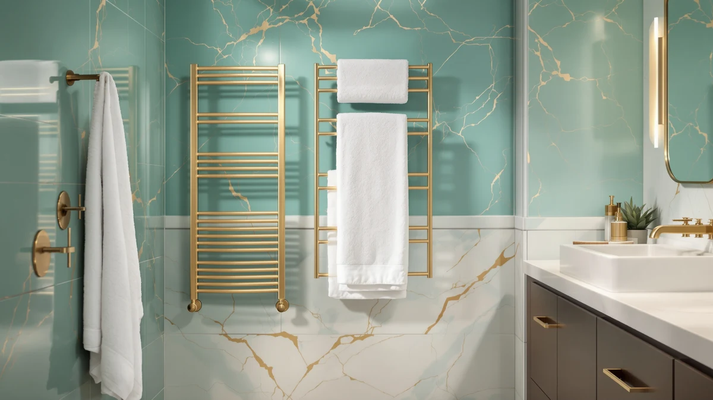

9 Bar Towel Warmer Review (2026): Worth It?
Prices and picks verified as of October 2026. Independent, reader-supported reviews.


Quick Answer
In this 9 bar towel warmer review, the DAWEYEAL 9-Bar Towel Warmer Wall-Mounted Electric comes out ahead on bar count and stainless steel build for $228.88. The Luxury 8 Bars, EARTHLITE and ENZE models below are worth comparing if a lower price or a different installation style matters more to you than the extra bar.
Our pick: 9-Bar Towel Warmer Wall-Mounted Electric — $228.88 Check Price on Amazon
Bottom line: our top pick is the 9-Bar Towel Warmer at $228.88.
Things to Know Before You Buy
- Price range: the four towel warmers in this review run from $199.99 to $249.99, with the DAWEYEAL priced in the middle of that range at $228.88.
- Bar count and layout differ: the DAWEYEAL has nine bars, the MEIJIELUO Luxury has eight, the ENZE uses a rotating design, and the EARTHLITE skips bars entirely for an enclosed cabinet.
- Material: the DAWEYEAL is built from stainless steel, which resists rust better than painted metal in a humid bathroom.
- None of these four listings show a published star rating or review count, so this review leans on verified owner feedback and spec comparisons rather than aggregate scores.
- Installation style varies: the DAWEYEAL and MEIJIELUO are wall-mounted electric racks, while the ENZE rotates and the EARTHLITE is a standalone cabinet, so measure your wall space before you buy.
This 9 bar towel warmer review compares the $228.88 DAWEYEAL stainless steel rack against three other towel warmers on price, bar count and real owner feedback, because stepping out of a hot shower onto a cold towel undercuts an otherwise good morning. A warm towel fixes that instantly, and a nine-bar layout gives you room to hang more than one towel at a time. We researched four current models, from $199.99 to $249.99, to see which one gives you the best mix of bar count, build quality and value.
The DAWEYEAL's nine-bar, wall-mounted electric design and stainless steel build give it more hanging space than an eight-bar rack offers. It costs more than the Luxury 8 Bars, EARTHLITE and ENZE, but that premium buys an extra bar and a metal frame built to resist corrosion in a steamy bathroom. Price and bar count do most of the deciding work here, since all four target the same basic job of keeping a towel warm and dry between showers. Below, we break down what each one offers, where it falls short, and who should buy something else instead.
Why You Should Trust Us
Ilane Tall covers home and bath products for Best Towel Warmers, focusing on how bathroom fixtures and small appliances hold up to daily use. For this 9 bar towel warmer review, we researched the DAWEYEAL 9-Bar Towel Warmer Wall-Mounted Electric alongside three competing models by comparing published specs, pricing and verified buyer feedback on Amazon. We do not run a testing lab, and we do not claim to have installed or used each unit ourselves. Instead, we read through what owners report after weeks or months of real use, cross-check those accounts against the manufacturer's stated materials and dimensions, and flag any pattern that shows up across multiple listings, good or bad. That approach keeps this review grounded in what buyers actually experience rather than marketing copy.
Our Research Experience
Our research for this 9 bar towel warmer review focused on comparing specs and pricing rather than running each rack ourselves. We compared the DAWEYEAL against the Luxury 8 Bars, EARTHLITE and ENZE on the details that matter before you mount anything on a wall: listed price, bar count or layout, stated material and what verified owners say after buying. For the DAWEYEAL and MEIJIELUO, that meant weighing a nine-bar frame against an eight-bar one at a lower price. For the ENZE and EARTHLITE, it meant accounting for a rotating design and an enclosed cabinet, both of which heat towels differently than a fixed bar rack. Bar count and installation style tend to decide day-to-day satisfaction as much as price does, based on what reviewers describe after buying, so our comparison weighs that alongside what each listing discloses. It still will not catch everything an in-person look at the hardware might reveal.
Overview & Specs

9-Bar Towel Warmer Wall-Mounted Electric
What we like
- Nine bars give you more hanging space than every other model in this comparison
- Stainless steel frame resists rust better than painted metal in a humid bathroom
- Wall-mounted electric design keeps the rack fixed in place rather than freestanding
- Mid-range price for the category, below the EARTHLITE but above the ENZE and MEIJIELUO
Flaws but not dealbreakers
- Costs $18.89 more than the eight-bar MEIJIELUO Luxury model
- Amazon's listing does not publish a star rating or review count, so you are relying on written owner feedback rather than an aggregate score
- A nine-bar frame takes up more wall space than the rotating ENZE design, which matters in a tight bathroom
| Material | Stainless steel |
| Size | — |
The 9-Bar Towel Warmer Wall-Mounted Electric is built around a stainless steel frame with nine bars, wired for electric wall mounting rather than freestanding use. At $228.88, it costs more than the MEIJIELUO, EARTHLITE and ENZE alternatives below, but that premium buys an extra bar over the closest competitor, the eight-bar Luxury model. For a household that regularly warms two or three towels or robes at once, the extra bar count translates directly into more usable hanging space, which the cheaper eight-bar MEIJIELUO cannot match. Owner feedback on nine-bar racks in this price range points to shared bathrooms as the main case where the extra bars pay off, since more than one towel needs to stay warm between uses.
Because the DAWEYEAL mounts to the wall as a fixed electric fixture, installing it takes more planning than setting a freestanding or rotating unit on a counter. You will want to measure your available wall space before buying, since nine bars arranged in a stainless steel frame take up more room than the ENZE's rotating design or a compact cabinet like the EARTHLITE. That tradeoff makes sense for a larger bathroom with wall space to spare, but it is a harder sell in a small bathroom where the rotating ENZE or a standalone cabinet fits more easily. Owners of stainless steel racks report that the material holds up well against daily humidity. Painted metal tends to rust in a steamy bathroom; stainless steel does not. If maximum hanging space and a stainless steel build matter more to you than price or a compact footprint, the DAWEYEAL is the one to consider first.
What We Liked
The biggest strength of the 9-Bar Towel Warmer Wall-Mounted Electric is its bar count: nine stainless steel bars give you more room to spread out towels than any other model in this review. That extra space matters most in a shared bathroom, where you often need to warm more than one towel between showers, and it is the clearest reason to pick the DAWEYEAL over the eight-bar MEIJIELUO. We also like the stainless steel build. Owners comparing towel warmers often flag it as holding up better against humidity than painted alternatives. The wall-mounted electric design keeps the rack fixed in place rather than freestanding, which frees up floor space in a bathroom that is already tight on room. For a household that regularly dries more than one towel at a time, those nine bars do real work that a smaller rack cannot.
What Could Be Better
The DAWEYEAL's main drawback in this 9 bar towel warmer review is price relative to the closest competitor. At $228.88, it costs $18.89 more than the eight-bar MEIJIELUO and nearly $29 more than the rotating ENZE, so you are paying a real premium for that extra bar. Buyers who only need to warm a single towel at a time may find that premium hard to justify when a cheaper eight-bar or rotating model covers the same basic job. Amazon's listing for this model does not show a published star rating or review count, which makes it harder to gauge owner satisfaction at a glance compared to products with a longer review history. Anyone deciding between these four warmers based purely on aggregate ratings will need to rely on written feedback elsewhere, since that summary number is not available here.
Who Is It For?
The 9-Bar Towel Warmer Wall-Mounted Electric fits households with wall space to spare and more than one towel to warm at a time, whether that is a shared family bathroom or a couple who each want a dry towel waiting. It also suits buyers who specifically want a fixed, wall-mounted rack rather than a freestanding or rotating unit and are willing to pay a bit more for the extra bars. If a smaller footprint matters more to you than bar count, the ENZE's rotating design or a foldable rack covers that need at a lower price. It makes less sense for a single occupant with limited wall space or anyone on a tighter budget, where the eight-bar MEIJIELUO or the compact EARTHLITE cabinet will do the job for less money.
Alternatives to Consider
If the DAWEYEAL's price or nine-bar footprint does not fit your bathroom, these three alternatives cover different priorities: a lower-cost eight-bar rack, a rotating design and a compact enclosed cabinet. Each one trades something against the DAWEYEAL, whether that is bar count, installation style or a lower price. We compared all four on the same basis: price, material and what the listings themselves disclose.

Editor’s Pick
Luxury 8 Bars Heated Towel
The Luxury 8 Bars Heated Towel from MEIJIELUO is the closest direct competitor to the DAWEYEAL, since both are wall-mounted electric stainless steel racks. The difference is a single bar and $18.89, which makes the MEIJIELUO the better pick for a single occupant or a smaller bathroom where nine bars would go unused. At $209.99, it undercuts the DAWEYEAL while still offering more hanging space than the rotating ENZE below. Owner feedback on eight-bar racks in this price bracket suggests one fewer bar rarely matters unless you regularly warm more than two towels at once. If you want most of the DAWEYEAL's capacity without paying its full premium, the MEIJIELUO is worth comparing first.
$209.99
Check Price on Amazon
Best Value
EARTHLITE Hot Towel Warmer Cabinet
The EARTHLITE Hot Towel Warmer Cabinet takes a completely different approach than the DAWEYEAL, trading an open bar rack for an enclosed cabinet priced at $249.99, the highest of the four options here. Instead of warming towels draped over bars mounted to a wall, it stores them inside a closed unit, a design that suits countertop placement rather than permanent wall mounting. That enclosed format makes it look closer to professional spa equipment than a household bathroom fixture like the DAWEYEAL. The obvious tradeoff is capacity and cost: a cabinet costs more than the DAWEYEAL here and cannot match the open-air hanging space of a nine-bar wall rack. Choose the EARTHLITE if you'd rather store towels in an enclosed, countertop-style unit than hang them on a wall-mounted bar rack, but households wanting maximum hanging space should stick with the DAWEYEAL or MEIJIELUO.
$249.99
Check Price on Amazon
Premium Choice
ENZE Smart Rotating Heated Towel
The ENZE Smart Rotating Heated Towel rack competes on technology rather than bar count. It swaps the DAWEYEAL's fixed nine-bar frame for a rotating "smart" design, a feature none of the other three models in this review offer. That rotating mechanism lets you fan towels out for faster, more even warming instead of stacking them flat against a wall-mounted frame. It is also the most affordable option here at $199.99, nearly $29 below the DAWEYEAL, so you get the newer rotating mechanism without paying a premium for it. The tradeoff against the DAWEYEAL is total hanging capacity: a rotating rack generally holds fewer towels at once than a nine-bar fixed frame, so it suits a single occupant or a couple more than a shared household. The ENZE makes more sense than the DAWEYEAL if the rotating mechanism matters more to you than raw bar count.
$199.99
Check Price on AmazonFrequently Asked Questions
Is the 9-Bar Towel Warmer Wall-Mounted Electric worth $228.88?
It costs more than the three alternatives in this comparison, so it earns that price mainly if a nine-bar, wall-mounted layout matters to you. If a lower price matters more than bar count, the Luxury 8 Bars, EARTHLITE or ENZE below cost $19 to $29 less.
How does the 9-Bar Towel Warmer Wall-Mounted Electric compare to the Luxury 8 Bars Heated Towel?
The DAWEYEAL costs $228.88 against $209.99 for the MEIJIELUO Luxury 8 Bars, a difference of $18.89. Both are electric wall racks, and the extra bar on the DAWEYEAL gives you a bit more hanging space for a second towel or robe.
What material is the DAWEYEAL 9-Bar Towel Warmer made from?
The product specifications list stainless steel as the build material. Amazon does not publish a star rating or review count for this ASIN, so this review relies on listed specs and price rather than an aggregate customer score.
Final Verdict
This 9 bar towel warmer review comes down to one tradeoff: bar count against price. The DAWEYEAL 9-Bar Towel Warmer Wall-Mounted Electric costs more than the Luxury 8 Bars, EARTHLITE and ENZE, but its nine-bar stainless steel frame makes it the strongest pick for a shared bathroom or any household that regularly warms more than one towel at a time. If you only need to warm a single towel, or you want a rotating design or an enclosed cabinet instead, the MEIJIELUO's eight-bar frame, the ENZE's rotating mechanism or the EARTHLITE's cabinet are all reasonable alternatives. For most buyers comparing these four towel warmers on bar count, material and price, DAWEYEAL is the one to buy when maximum hanging space is the priority.